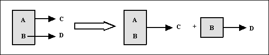
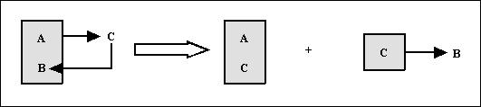

Resum
| 1FN |
Una taula està en 1FN si i només si els valors que componen els atributs d'una tupla són atòmics.
Es descompon la taula en dos
1a.- Projecció de la clau junt amb els atributs que tenen valors atòmics.
2a.- Nova clau amb els atributs que tenen valors múltiples (cal idear una nova clau).
| 2FN |
Una taula està en 2FN si i només si compleix dues condicions:
- Està en 1FN.
- Tot atribut secundari (els que no pertanyen a la clau principal) depèn totalment (té una dependència funcional total) de la clau completa, i per tant, no d'una part d'ella.
Es descompon la taula en dos
1a.- Una taula amb la clau i totes les seues dependències totals.
2a.- Una altra taula amb la part de la clau que té dependències, i els atributs secundaris implicats.

| 3FN |
Una taula es troba en 3FN si i només si es compleixen dues condicions:
- Està en 2FN.
- No existeixen atributs no primaris (que no formen part de la clau) que són transitivament dependents d'una clau candidata (cada possible clau de la taula).
Es descompon la taula en dos
1a.- Una taula amb la clau i tots els atributs no primaris que no són transitius.
2a.- Una altra taula amb els atributs transitius i l'atribut no primari (que serà la clau de la nova taula).
| FNBC |
Una taula està en FNBC si i només si està en 1FN i les úniques dependències funcionals són aquelles en què la clau principal (i claus candidates) determinen un atribut.
Es descompon la taula en dos
1a.- Una taula amb tots els atributs menys la part de la clau dependent de l'atribut secundari. La clau està formada per la resta de la clau i l'atribut secundari del que depenia part de la clau.
2a.- Una altra taula en què l'atribut de què depèn part de la clau serà la nova clau i aquesta part de la clau com a atribut secundari.

Llicenciat sota la Llicència Creative Commons Reconeixement NoComercial SenseObraDerivada 3.0